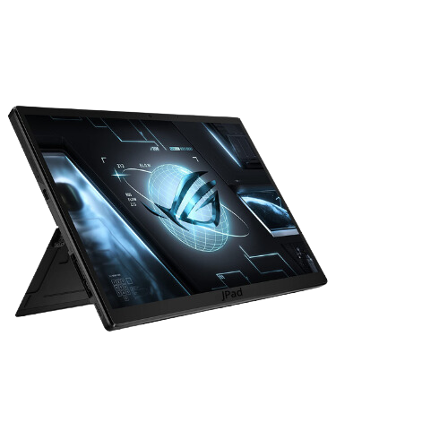

JPad

- • Pantalla de alta resolución con tecnología de pantalla avanzada para una reproducción de colores precisa y una experiencia visual inmersiva.
- • Procesadores potentes y eficientes energéticamente para un rendimiento fluido en aplicaciones exigentes y multitarea.
- • Memoria RAM generosa para una experiencia de usuario sin problemas al cambiar entre aplicaciones y realizar múltiples tareas.
- • Almacenamiento interno de gran capacidad para almacenar una gran cantidad de archivos multimedia y aplicaciones.
- • Diseño delgado y premium, posiblemente con materiales como aluminio o vidrio, y opciones de conectividad celular.
- • Conectividades avanzadas, como soporte para WiFi de última generación, Bluetooth 5.0, en y algunos casos, conectividad 5G
- • Batería de larga duración para permitir un uso prolongados sin tener que recargar frecuentemente.